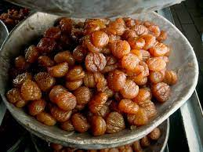

Italian Candied Chestnut

This is a nice sweet that will bring your meal to a perfect ending.
Ingredients
- 2 pounds of shelled fresh chestnuts
- 2 1/2 cups of water
- 2 pounds of sugar
- 1 teaspoon of vanilla
Steps
- Place Chestnut in pan with water just enough to cover them. Bring to boil and cook chestnut for 10 minutes
- strain the chestnuts
- rub the chestnuts with clean dishtowel in order to remove the skin
- In seperate pan put the 2 1/2 cups of water, granulated sugar, and vanilla to a boil while stirring
- Cook and mix for 5 minutes
- Add chestnuts to mixture and boil. Boil for 10 minutes
- Pour chestnuts into large loose container and allow the chestnuts to soak for 12 to 18 hours in the syrup.
- After soak put chestnuts in pan and boil for 2 minutes
- Take out and let rest. Repeat the boiling for 2 minutes and rest for a total of 3 times
- Bake chestnuts for 250 F degrees on parchment paper
- Let cool for an hour and then enjoy